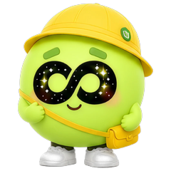
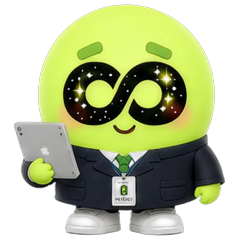
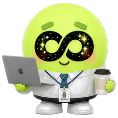

ニーズ把握
あなたのことを教えてください。答えに合わせて、最後のプランが変わります。

学ぶきっかけ (학습동기)
왜 한국어를 배우고 싶어요? 여러 개 골라도 돼요.どうして韓国語を学びたいですか？
いくつ選んでも大丈夫です。
ゴール (목표)
한국어로 뭘 할 수 있게 되고 싶어요? 하나만 골라 주세요.韓国語で何ができるようになりたいですか？
1つだけ選んでください。
学習ペース (학습 페이스)
일주일에 수업을 몇 번 받고 싶어요?1週間に何回、
レッスンを受けたいですか？
レポート＆プラン
今日の授業で確認した現在の実力と、
目標までの道のりを合わせてお見せしますね。

PODO TRIAL LESSON REPORT
포도님의 한국어 실력,
포도님의 한국어 실력,
꼼꼼하게 진단했어요.
—・체험 레슨・25분
내 레벨
Lv.1/ 10
한글을 하나씩 읽어요








TOPIK 1급—
레벨 체크 튜터만 보여요
오늘 수업에서 학생이 어땠나요?
항목별 진단포도 수강생 평균과 나란히 놓고 봤어요
내 레벨
포도 수강생 평균
정확성문법과 말끝이 어땠나요?
어휘쓸 수 있는 단어가 얼마나 되던가요?
유창성말이 얼마나 이어졌나요?
발음학생 말을 알아듣기 어땠나요?
듣기제 말을 알아듣게 하려고 얼마나 늦췄나요?
다섯 항목을 다 봤어요. 위를 눌러 다시 고칠 수 있어요.
 잘하고 있어요!
잘하고 있어요!
 아쉬워요!
아쉬워요!
✦체험레슨 코멘트


리포트 저장 튜터만 보여요